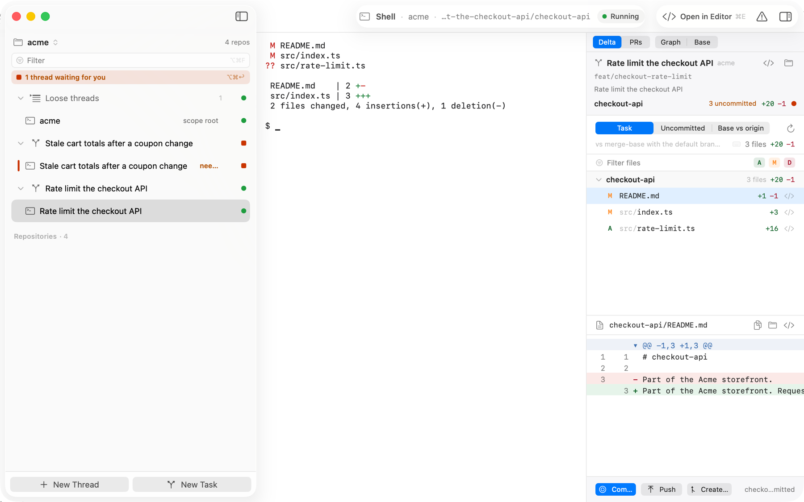
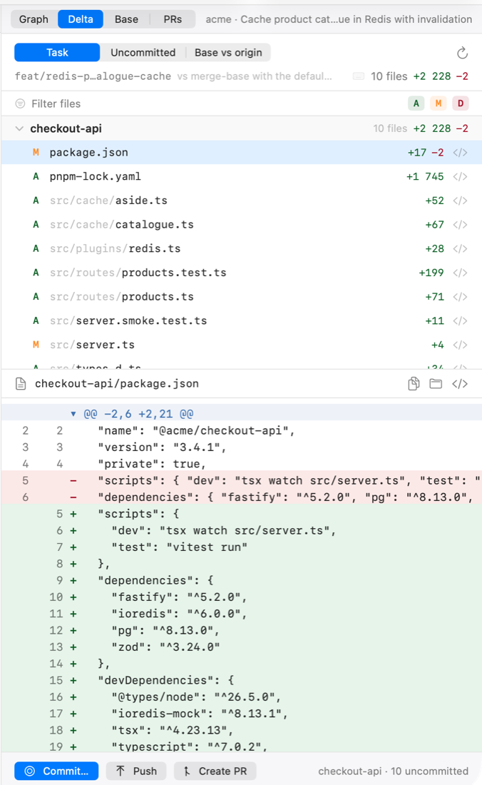
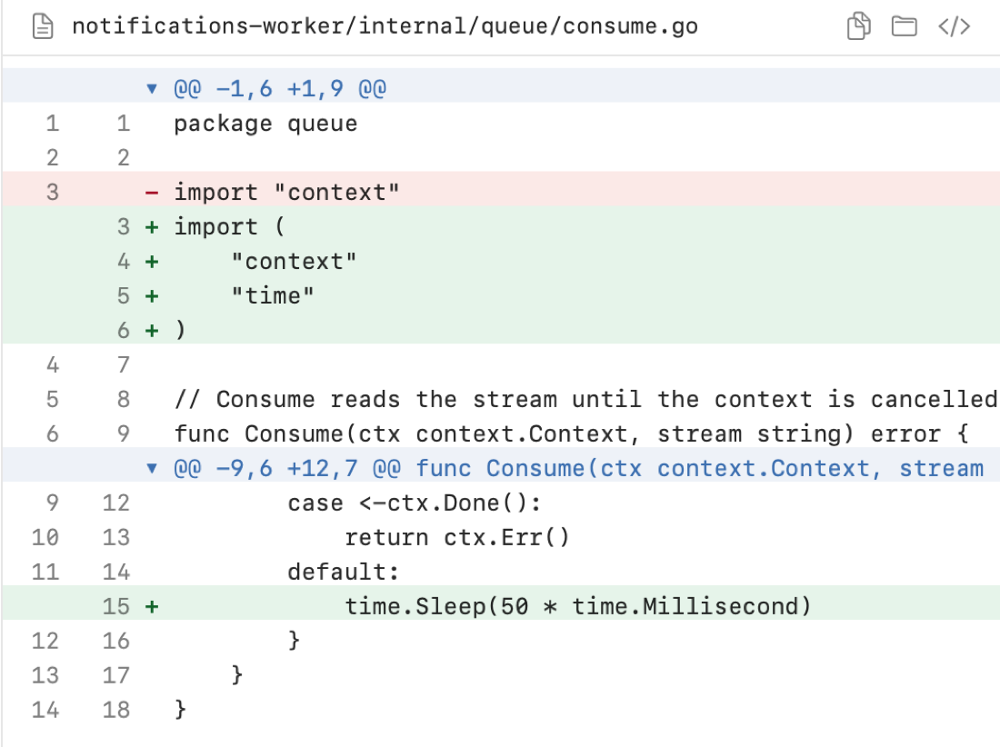
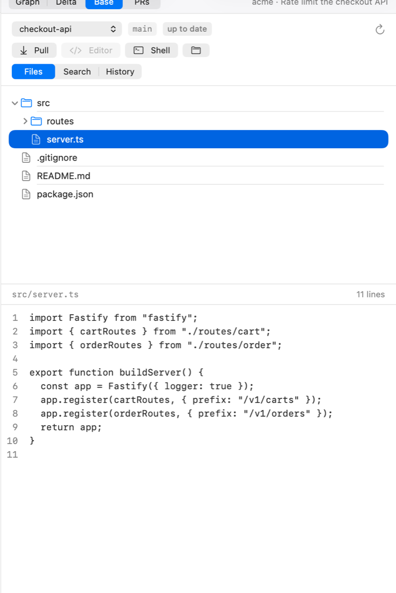
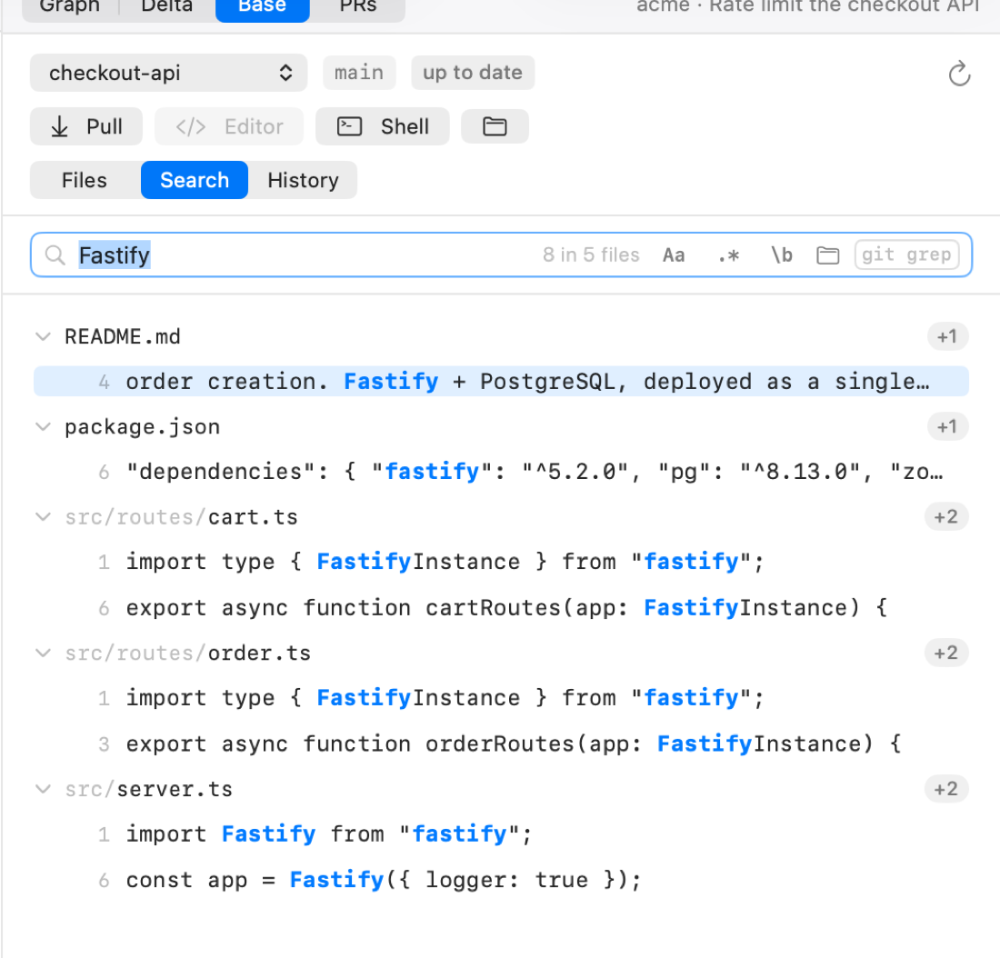

Delta, Base, pull requests
Everything you would otherwise leave the app for: what changed, what it changed from, and where it is going.

Delta
⌘D. Three modes over the same selection:
| Mode | Compares |
|---|---|
| Task | the task branch against its merge-base with the default branch — the whole change |
| Uncommitted | the working tree against HEAD — what the agent has not committed yet |
| Base vs origin | the local branch against its remote — what is not pushed |

Files are grouped by repository, with an add/modify/delete filter, a fuzzy filter field and per-file line counts. The mode is the menu in the section's header. Click a file to read its diff in the reading column beside the inspector; j/k move between files, [/] between hunks.
The agent's reply, as a page
An answer with headings, a table and a code block reads badly in a terminal, where lines wrap and tables
break. ⇧⌘R, the speech-bubble button in the toolbar, Read Reply in a thread's menu, or a click
on the Finished caption of its sidebar row open the thread's last reply in the reading column, rendered
as Markdown: headings, lists, tables, fenced code with a copy button, quotes. Web links open in the browser; a
path — a link, or a code span such as Sources/App.swift:12 — opens the file as a terminal link
would. Nothing in the text is ever fetched or run: images are shown as their text, HTML stays text, and a
javascript: or data: link is not a link. Copy as Markdown sits in the header;
Esc closes.
Files an agent mentions
⌘-click a path, or a file:// link, in a thread's terminal and the file opens in the same
column, at the line it names: the task's copy while the thread belongs to a task, the base checkout's otherwise,
the file itself when it lies elsewhere. A relative path is looked for from the thread's folder, then at the root of
every repository of the task — agents often leave the repository's name out — and when several files match, the
header lists them. A file the task changed has a button for its diff. Web links still open in the browser.
The diff

Native text: selectable, searchable with ⌘F, with both line numbers, and a copy / reveal / open-in-editor row for the file.
Commit, push, open the PR
That is the agent's work in its thread, so the buttons are off by default. With Settings ▸ Git ▸ Show commit
and push buttons, Commit… and Push appear when the pointer is on the Delta header, and Create
PR on the Pull Request header. Create PR shells out to gh and links the resulting pull request to
the task, so the Pull Request section keeps showing it and its checks.
The box at the end of each file row marks it as viewed: the row dims, so what is left to read stands out. The mark lasts while the file's diff stays the one you looked at; as soon as the agent changes that file again, it clears itself.
Commenting on lines
Review the agent's work where you read it. In the diff, a + appears in the line-number gutter under the pointer: click it to comment on that line, or drag down the gutter to comment on a range. The comment editor opens under the lines (⌘↩ adds it). Comments show as tinted rows under the lines they cover; click one to edit or delete it, or open the list from the review strip at the foot of the inspector.
Comments are kept per task, under ~/.scope/reviews/ — never in the sandbox. Each remembers the
exact text of its first line and three lines around it, so it follows the code as the agent keeps editing: a
comment whose lines are gone is listed at the top of the file instead of pointing at the wrong place.
Send Review turns them into one message — per comment the file, the line numbers the file has now, the code around them and your text — and pastes it into the task's thread as a single input. With several threads running, pick one. If the thread is in the middle of a turn, the review waits and goes out as soon as its hooks say the turn ended. Sent comments are cleared.
Base
⇧⌘B. The repository as it is on disk, outside any sandbox — the reference the agent is working from.

- Files — the tree of the checkout, every folder closed until you open it; a file opens read-only, with line numbers, in the reading column.
- Search —
git grepacross the checkout, with case, regex, whole-word and folder filters. A result opens in the reading column and opens just the folders above it in Files. - History — recent commits of the branch.

Pull sits in the Base header as soon as origin is ahead; it is fast-forward only and refuses on a dirty tree. Fetch, Open in Editor, Shell and Reveal come on hover. Shell opens a thread rooted at the base checkout — useful when you want to run something against the real branch rather than a sandbox.
Trying a task in your checkout
A heavy dev server — one database, one port, one node_modules — runs in your checkout, and you want
to see a task's result there without a second install. That is the one time Scope moves a base, and it is off until
you turn it on: Settings ▸ General ▸ Tasks ▸ Allow trying a task in my checkout (or allowTryInCheckout
on a scope in config.json). On, a task's context menu offers Try in My Checkout, and so does
scope task try <task> from your own terminal. Agents are refused, always: the base is yours.
In the base of each repository of the task, Scope stashes whatever is not committed (untracked files included,
as scope-try-<task>-<time>), remembers the branch and commit you were on, and detaches
HEAD onto the task branch — detached, so your branch itself never moves, and never a
reset --hard. It refuses a checkout in the middle of a rebase or merge, one with conflicted paths, and
one already on another task; a repository that fails after others moved puts them back, so the task is tried whole
or not at all. Your own git hooks apply, not the sandbox's.
While it lasts, a banner on the task and on the Base panel of the repository says Your checkout is on
<task> since 12:04, the Dock badge reads try and the menu bar shows it. The task's threads
keep working in the sandbox; the base is a mirror you run. Refresh moves the detached checkout to the
branch's current head once the sandbox commits more.
Put back — from the banner, the context menu or scope task try <task> --end — switches
back to your branch and applies the stash, then drops it. It also runs on its own, without asking, when the task is
archived or closed and when Scope quits; a put back cut short by a quit is finished at the next launch. Changes you
made in the base while trying are stashed aside and kept. A stash that no longer applies cleanly is kept too, the
Base panel opens on the repository and a notice says which stash it is — nothing of yours is ever dropped.
Pull requests
⇧⌘P. Open pull requests of the selected repository, through the gh CLI and your
existing GitHub authentication: title, number, author, branch, checks and review state. Open one in the
browser, or turn it into a task whose sandbox sits on the PR's head.
The panel needs gh auth login and a GitHub remote. A repository without one
simply shows nothing to list.
A task's pull requests, to the merge
Once a task has a pull request — opened from its thread, or the one it was opened on — the Pull Request section lists its checks, refreshed every minute: state, name, and a link to each check's page.
A task can have several: one per repository, two on the same branch, a stack, a docs pull request next to the
prototype's. Scope finds them on every branch a sandbox has been on (gh pr list --head, the reflog
says which) and keeps them all, in a fixed order — the task's repositories, then the numbers — that never moves
with their states. The sidebar row speaks for the most pressing open one (a conflict before red checks before
running checks), and says PR merged once every one is merged or closed. The section's header, the hover card
and scope list tasks sum them up (2 PRs · 1 merged · 1 checks failing); the section lists them
with the repository in front, and the one you pick is the one Open on GitHub, Merge, Fix Conflicts
and Send to Thread act on. The context menu and the palette offer one Open Pull Request per pull
request, named by repository; the Inbox lists one item per pull request. A task is archived on merge only once none
of its pull requests is still open.
- Send to Thread on a failed check fetches the failed steps' log with
gh run view --log-failedand pastes its end, with a sentence naming the check, into the task's thread — the same delivery as a review, so a thread mid-turn gets it when the turn ends. A check that is not a GitHub Actions job has no log to fetch; the thread gets its link. - Merge appears on the Pull Request header (with the commit and push buttons turned on) when GitHub says the pull request merges cleanly. It uses the method the repository allows (merge commit, else squash, else rebase), asks first, and then offers to close the task, which removes its sandboxes and deletes the branch the task created — never a branch name it would have to guess.
- Fix Conflicts stays on the header when the pull request conflicts with its base: the thread is asked to merge the base into the branch, resolve, run the tests and push.
Every task, not only the one on screen
The task on screen is refreshed every minute; every other open task is read from GitHub every 5 minutes in the
background, two gh calls at a time and spread over the interval. A task with nothing committed yet is
skipped until it has a commit; one whose fetch fails is asked less and less often, up to once an hour; a merged or
closed pull request every half hour. Nothing runs in Low Power Mode. The checks say how old they are —
✓ checks passed · 4 min ago — on the Pull Request header and in the task's hover card, and turn grey
once older than 15 minutes: a green that old may no longer be true.
When a refresh sees the pull request merged, Scope archives the task the way the sidebar's Archive does and leaves one quiet notice, Archived <task>: pull request merged, with Restore, and the undo toast — once nothing holds it any more. A merge says one branch landed, not that the task is over, so the archive waits while:
- a thread of the task is mid-turn, waiting for an answer or a permission, failed on an error, still launching, was cut off mid-turn by a quit, or has sub-agents running;
- a task launched from it — or from one of those, all the way down — is still open: an orchestrator stays while its children work;
- a sandbox has uncommitted changes, or commits past the head of the merged pull request that no remote has;
- Scope has not measured a sandbox yet.
And a thread that started a turn after the merge — a new message, a follow-up — means the work went on: the task stays open until you or its agent archive it, or another of its pull requests merges. A pull request closed without merging never archives anything, and a task with a pull request that you restore stays open. Turn it off in Settings ▸ General ▸ Tasks ▸ Archive a task when its pull request merges. A task with a pull request therefore stays open until the merge: agents no longer poll GitHub for it, and only archive themselves work that has no pull request.
A task follows main
Thirteen tasks on one repository, and every pull request rebased by hand once a sibling merged: that is what this
replaces. After each background refresh Scope fetches the task's sandbox and measures its branch against
origin/<default> — how many commits behind, and whether bringing main in would conflict, with a dry
merge (git merge-tree --write-tree) that touches nothing. The Pull Request section and the task's hover
card say behind main by 4 · conflicts in 2 files; scope list tasks has a MAIN column. Then,
per Settings ▸ General ▸ Tasks ▸ When main moves:
- Ask the agent (default): when the branch conflicts with main, or GitHub reports the pull request as
conflicting, the task's thread — the first live Claude Code or Codex thread, or a new one when none runs — is
told the conflicting files and asked to merge
origin/mainin, keep both sides, regenerate, re-run the suites it touched one at a time, push without forcing and reply when mergeable. Once per move of main: no repeat until main moves again. A branch behind without conflicts is left to the agent — unless main touched files the task changed while its pull request waits and no thread is at work: then the thread is asked to merge main in before it conflicts (Base branch moved). - Rebase when clean: behind without conflicts and no thread at work in the task, Scope runs
git rebase origin/<default>in the sandbox itself and pushes with--force-with-leasewhen the branch is published and its pull request open. A rebase that stops is aborted, the branch left exactly where it was, and the agent asked instead. The base checkout is never touched. - Never: the lag is measured and shown, nothing more.
A task's context menu holds its branch out of all of this — Don't Rebase Automatically — and offers
Rebase on Main Now, the same as scope task rebase <task> (scope_task_rebase):
the clean rebase, or the message to the thread, on demand. A scope may set its own choice in config.json
(followMain on the scope's declaration).
A task left open with no thread activity for 3 days (Settings ▸ General ▸ Tasks ▸ Idle after), or whose
pull request was closed without merging, says so in its row — idle 4d, PR closed, ahead of
what its agent last did, or after the name on a compact row — and, arranged by state, goes under Dormant, unless it is waiting for you or working.